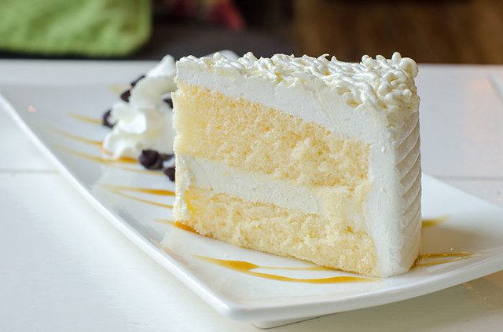

Homepage
Vanilla Cake

Vanilla cake is a classic desert that can be as simple or as fancy as the situation entails. Cakes
are known for being hard to bake, but the classic vanilla cake is as easy as pie, doesn't take much time,
and will make anyone happy no matter the occasion.
The modern vanilla can emerged in the 19th century with an increased supply of sugar and baking powder,
with its simple naturing allowing it to propel to success. This recipe will be in its purest, base form,
but you're allowed to add literally anything you could possibly want to this yummy treat.
Ingredients
- Cooking spray
- All-purpose flour - 2 2/3 cups
- White sugar - 1 cup
- Baking powder - 1 tbsp
- Vanilla extract - 1 tbsp
- Salt - 2 pinches
- Eggs - 3 count
- Milk - 3/4 cup
- Vegetable oil - 3/4 cup
Steps
- Preheat the oven to 350 degrees F (175 degrees C).
Grease a 9-inch cake tin with cooking spray and line with parchment paper.
- Mix flour, sugar, baking powder, vanilla extract, and salt together in a large bowl.
Add eggs, milk, and vegetable oil; mix by hand or beat with an electric mixer on low speed
until smooth. Add more flour if batter is too runny. Pour into the prepared pan.
- Bake in the preheated oven until a toothpick inserted into the center of the cake comes out clean,
about 1 hour. Cool on a wire rack for 5 minutes. Run a table knife around the edges to loosen.
Invert cake carefully onto a cooling rack. Let cool completely.